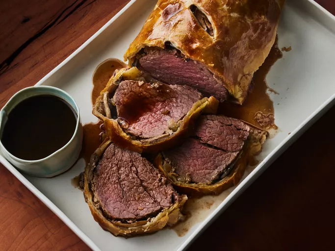

Beef Wellington

Description
This beef Wellington recipe includes a rich red wine sauce. It's easier than you think to make and absolutely perfect for entertaining at Christmas or any time you want to impress your guests! The beef tenderloin is best served medium-rare.
Ingredients
- 2 ½ pounds beef tenderloin
- 4 tablespoons butter, softened, divided
- 2 tablespoons butter
- 1 onion, chopped
- ½ cup sliced fresh mushrooms
- 2 ounces liver paté
- salt and pepper to taste
- 1 (17.5 ounce) package frozen puff pastry, thawed
- 1 large egg yolk, beaten
- 1 (10.5 ounce) can beef broth
- 2 tablespoons red wine